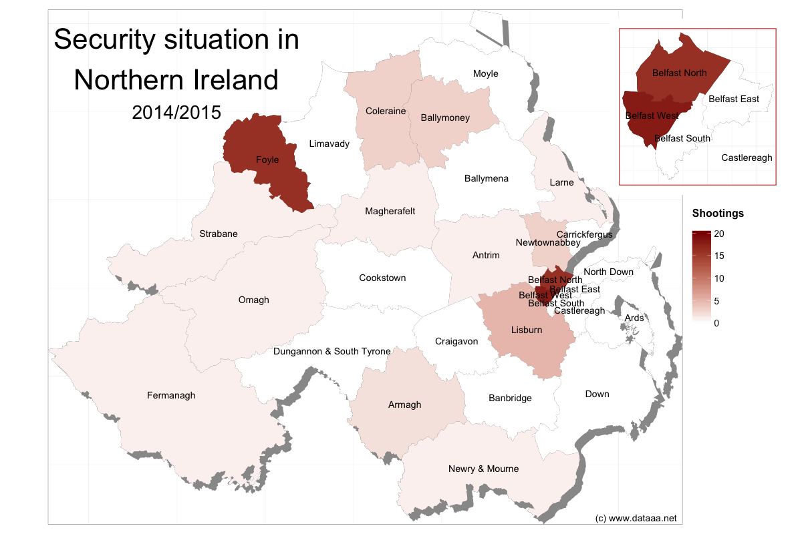
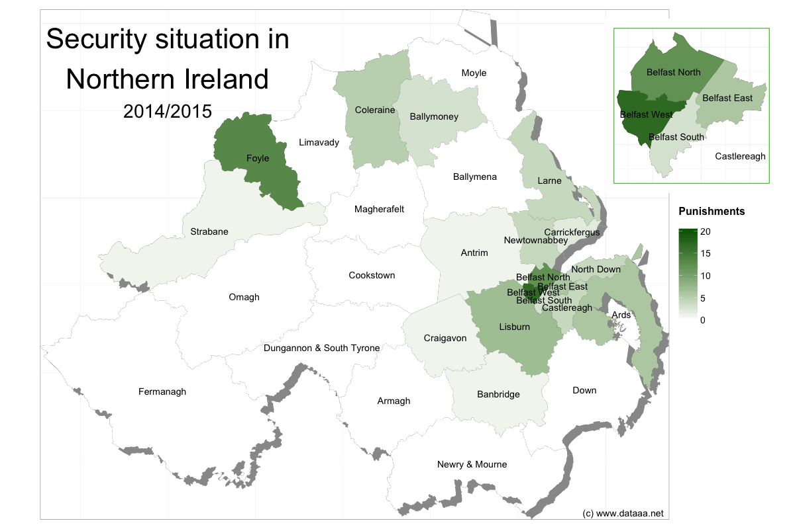
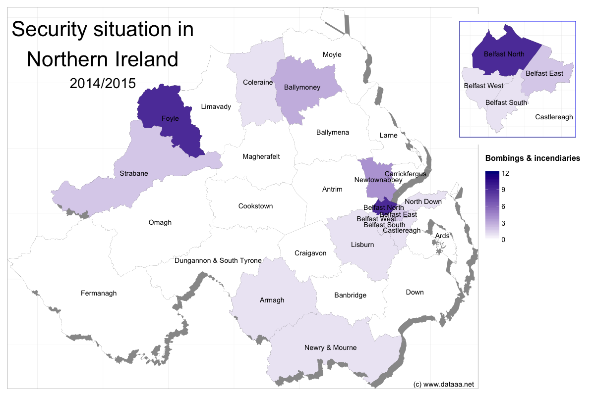

The security situation in Northern Ireland
The history of Northern Ireland has been troubled for many many years, with the most recent eruption of violence ("The Troubles") spanning from the late 1960s until a political ceasefire was called in 1998. In 2005, only 10 years ago, the main paramilitary group involved in The Troubles, the IRA (aligned with the Republican movement) declared a disarmament, and a resolution to pursue purely political means of restitution. However, it is clear from the current situation in the province that the past has not been forgotten, and the animosity between the Unionists (who are in favour of NI being part of the UK) and the Republicans (Irish Nationalists, against the union with the UK) is still alive and well, and is being cultivated by the respective factions.
The Police Service of Northern Ireland (PSNI) keep a record of incidents that they attribute to the so-called "security situation", which shows that although paramilitary-style killings are now very low, other incidents, such as shootings, bombings, uses of incendaries, and assaults, occur on a regular basis. These incidents are routinely assigned to either loyalist (Unionist) or republican (Nationalist) groups, and often reported in the press to be due to 'dissident' elements in both camps.
The PSNI today published their data for 2014/15. I took a look at it, and saw that the north and west of Belfast, and the region of Foyle (which contains the city (London)Derry) are still battlegrounds for what is essentially gang warfare. I looked at shootings, punishment assaults/shootings (inflicted by a sect upon its own members) and bomb/incendiary useage.
  
More on this to come.